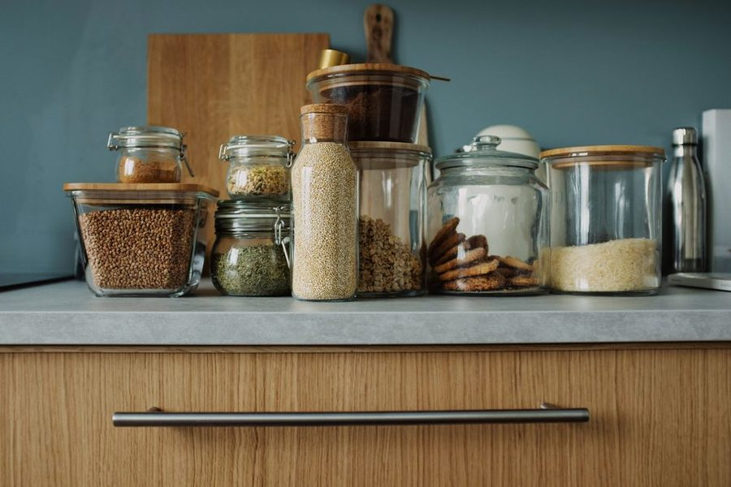

Anotado em 9 de abril · leitura de 5 minutos
Congelar três marmitas iguais é a receita do enjoo na terceira. Preparar base, proteína e um molho separados resolve o mesmo tempo com três refeições diferentes.

A promessa de cozinhar uma vez por semana e verdadeira, mas o formato usual sabota o resultado. Quem monta cinco marmitas idênticas no domingo come a primeira com prazer, a segunda por conveniência e joga a quinta fora. O desperdicio não vem da comida: vem da monotonia.
A correção e cozinhar por componente. Uma base de carboidrato (arroz, batata cozida, macarrão curto), uma proteína em ponto neutro (frango desfiado, carne moida sem tempero forte, grão de bico), um refogado de legumes e um ou dois molhos guardados a parte. Nada e montado antes da hora.
Com quatro componentes na geladeira, cada refeição vira uma combinação diferente montada em três minutos. O mesmo frango vira salada morna na segunda, recheio de sanduiche na terça e sopa rápida na quarta. O tempo de preparo foi o mesmo do modelo de marmita; a variedade percebida triplicou.
Componente temperado forte tem um destino só. Frango com curry não vira sanduiche, e carne com molho de tomate não vira salada. Deixe sal, alho e pouco mais no preparo, e guarde o tempero definitivo para o momento do prato. Dois potinhos de molho pronto na porta da geladeira fazem esse trabalho.
Vale o mesmo para a base: arroz sem manteiga aceita mais destinos que arroz com açafrão. A regra é simples: quanto mais neutro o componente, mais dias ele sobrevive na rotina sem cansar.
Nem tudo aguenta o mesmo tempo. Folhas e legumes crus duram dois dias; refogados duram três; proteinas cozidas duram três a quatro sob refrigeração constante. Monte a ordem de uso na hora de guardar, com o que sai antes na frente da prateleira.
Se a família costuma sobrar comida no terceiro dia, o volume está errado. Cozinhe para dois dias e meio em vez de três. Fazer menos é a única correção que sempre funciona, é a mais difícil de aceitar por quem gosta de cozinhar.
Congela bem: caldos, molhos de tomate, carne moida, feijao, paes. Congela mal: batata cozida inteira, folhas, preparos com maionese, macarrão já no molho. Rotule o pote com o conteúdo e a data em fita crepe. Sem data, o freezer vira arquivo morto e o conteúdo vira adivinhação.
Uma revisão de freezer por mês, com dez minutos, resolve. Sai o que está acima de três meses, entra o que foi feito na semana. Esse habito curto vale mais que qualquer organização elaborada de prateleira.
Numa cozinha comum, o preparo dos quatro componentes leva entre setenta e noventa minutos, com dois deles no fogao ao mesmo tempo. E mais que o preparo de uma refeição única é muito menos que os cinco preparos que ele substitui. A conta só fecha, porém, se a louca do preparo entrar no mesmo bloco de tempo.
Texto do caderno do Plano Claro. Escrevemos a partir da rotina de casas comuns; adapte o que servir e ignore o resto.